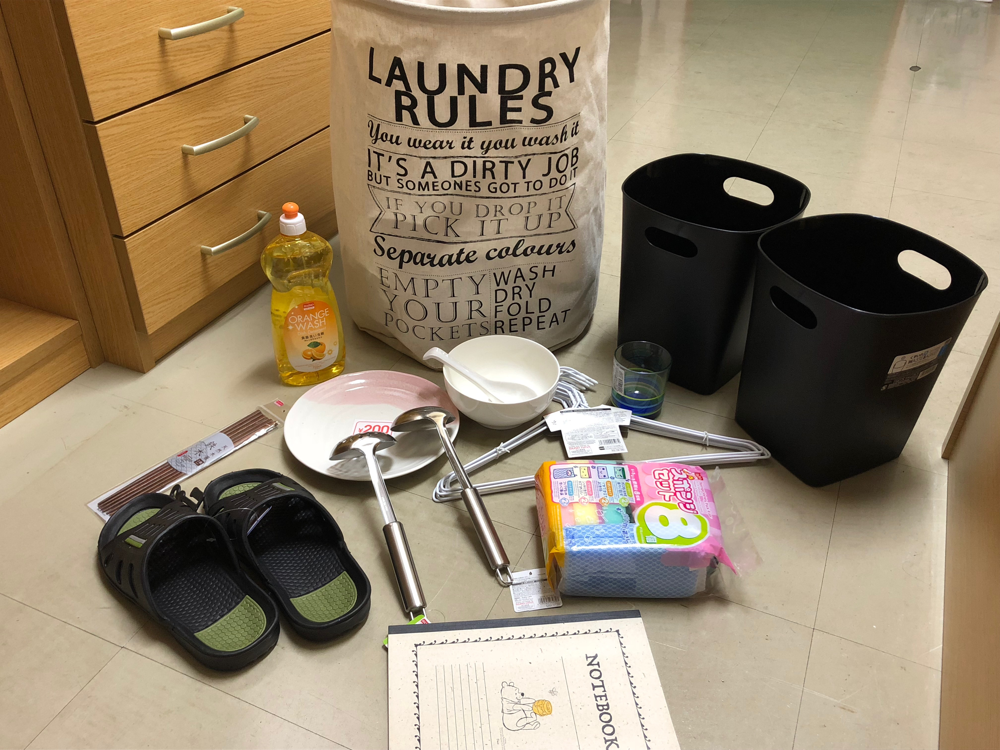

Boring Logistics and Daiso
つまらない兵站学とダイソー
March 29, 2018
There's a lot of paperwork and hoops to jump through as a short term resident of Japan. Volunteers from our university helped us get registered with the prefecture, open bank accounts, and set up auto pay for some bills, including the National Health Insurance. It was all a blur. I just signed on the dotted line, and wrote my name in katakana, a lot.
Interesting fact: Japanese people typically have a hankou (stamp) for authentication instead of using signatures.
The banks, prefectural office, and post office looked like the DMV. In fact, the prefectural office was essentially the DMV. Our morning was filled with numbered tickets and waiting. However, because it's Japan, I still managed to be fascinated by Japanese office life.


Interesting fact: Japanese people typically have a hankou (stamp) for authentication instead of using signatures.
The banks, prefectural office, and post office looked like the DMV. In fact, the prefectural office was essentially the DMV. Our morning was filled with numbered tickets and waiting. However, because it's Japan, I still managed to be fascinated by Japanese office life.
Downtown Sendai shoutengai (covered shopping mall)
Daiso in America has nothing on Daiso in Japan. We located a 7 floor Daiso selling cheap, convenient items in every category possible. They sell cleaning supplies, stationary, snacks, laundry supplies, cooking utensils (although, I don't recommend getting pots and pans here) , eating utensils, pet supplies and so much more. The part that surprised me the most was that each item is 108 yen (as opposed to 150 yen). Because of the import costs, things at the Daiso in America tend to not be worth the money. But things here are definitely, very much worth the money. I'm surprised by how many essentials I need to get me past these 4 months. However, if there's any place that can ease that pain, it's Daiso!Got all of this for around 2000 yen! (<$20) College student starter pack (Japan edition)
<< Previous Day >> Next Day